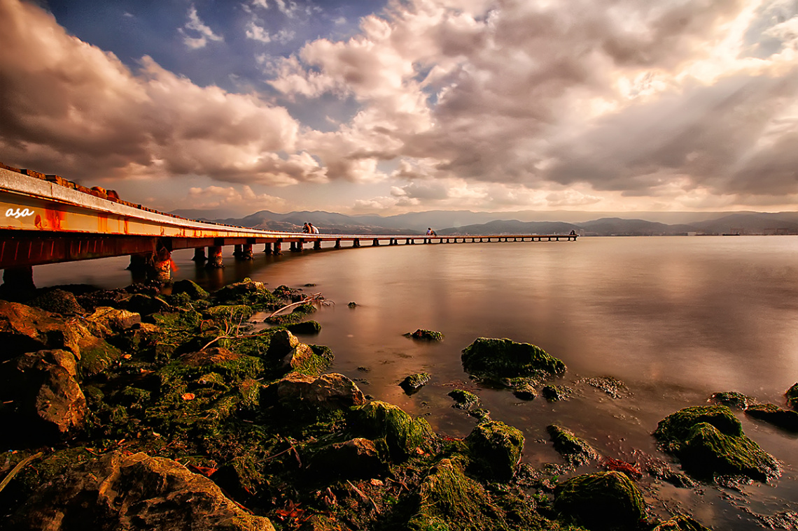

22 yıldır içinde bulunduğum İzmit’in bağlı olduğu Kocaeli ili 2021 nüfusu, tahmini verilere göre 2.037.203’tür ve yüzölçümü 3.623 km2 olan Kocaeli ilinde kilometrekareye 551 insan düşmektedir. Kocaeli nüfus yoğunluğu 551/km2'dir.
Bu güzel şehirde sevdiğim birkaç yeri ise size şöyle sıralayabilirim:
Seka Park: İzmit denilince benim aklıma gelen ilk yer tabii ki sahil! Marketten alınan yiyecek/içecek ile arkadaşlarla vaktin nasıl geçtiğinin asla anlaşılmayacağına garanti verebilirim.
Taşra Kahve: İzmit’in çok da bilinmemiş bir kafesi olan Taşra ambiyansı ile benim inanılmaz sevdiğim yerlerden bir diğeri. Taşra adından da tahmin edildiği gibi kışın içeride yanan sobasıyla, duvarların eskitmeliği ve de asılı olan tablo/fotoğraf detaylarıyla, ufak tahta sandalyeleriyle tam da böyle hissettiriyor. Andan uzak. Ek olarak çalışanların hoş sohbeti, arada edilen tatlı ikramlarıyla çok sevdiğim bir yer.
Fuar: Fuar ya da luna park da diyebileceğim bu eğlence alanı önceleri tamamen oyuncak olarak gittiğim bir yerken yaşımın büyümesi/ oyuncaklara artık o kadar da ilgi duymamam ve tabii ki inanılmaz artan jeton fiyatlarıyla çok da tercih etmediğim bir alanken fuarın içinde buluna o küçük göl hala gitmekten çok hoşlandığım bir alan. Göl, yazın açılan luna park alanıyla birlikte çok dolu olurken aksine sonbahar/kış ve ilkbahar başlarında bir o kadar sakin ve vakit geçirmeye çok uygun. Etrafında yürümek, kuğuları beslemek, arkadaşlarla vakit geçirmek, su bisikletlerini kullanmak gibi aktiviteleriyle vakit geçirmek ve de kendimle kalmaktan çok hoşlandığım bir diğer alan.
Ormanya: Ormanya Eşme ilçesinde yer alan, içerisinde yürüme parkurları, piknik alanları, mini hayvanat bahçesi, isteyenler için kamp yapma imkânı sunan mini bir orman! Ormanya, özellikle bu corona döneminde vakit geçirmek için, bahar/yaz dönemlerinde çok kalabalık olmasına karşın sosyal mesafemizi korumaya alan bırakan çok güzel bir alan.
Sizin için bir öneri videosunu ise buradan izleyebilirsiniz.
Tüm Hakları Saklıdır © | 2021
Designed by ecreaynurakcay